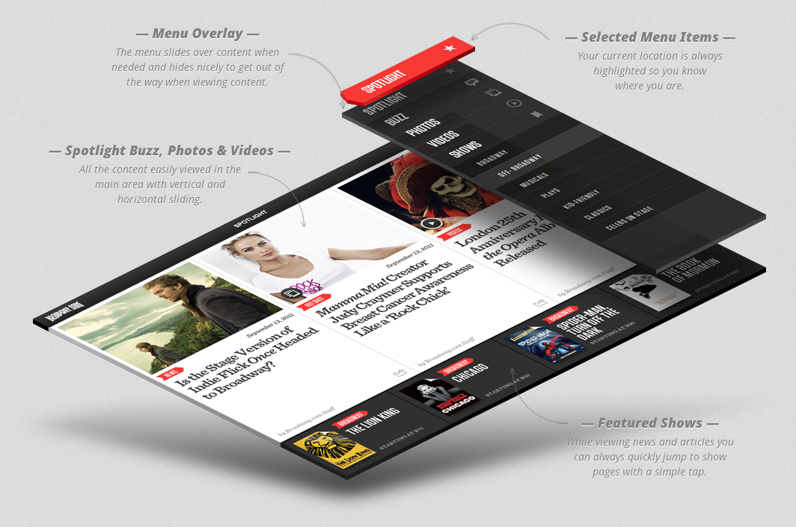
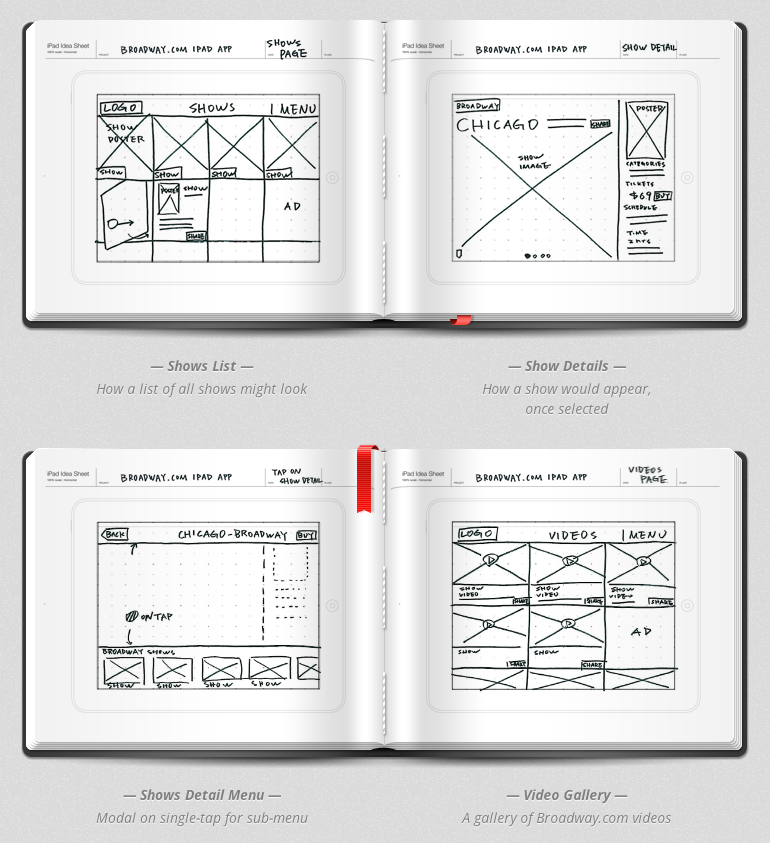
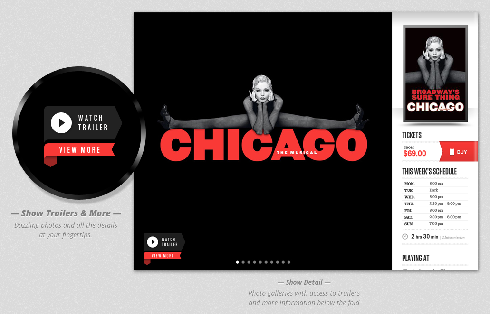
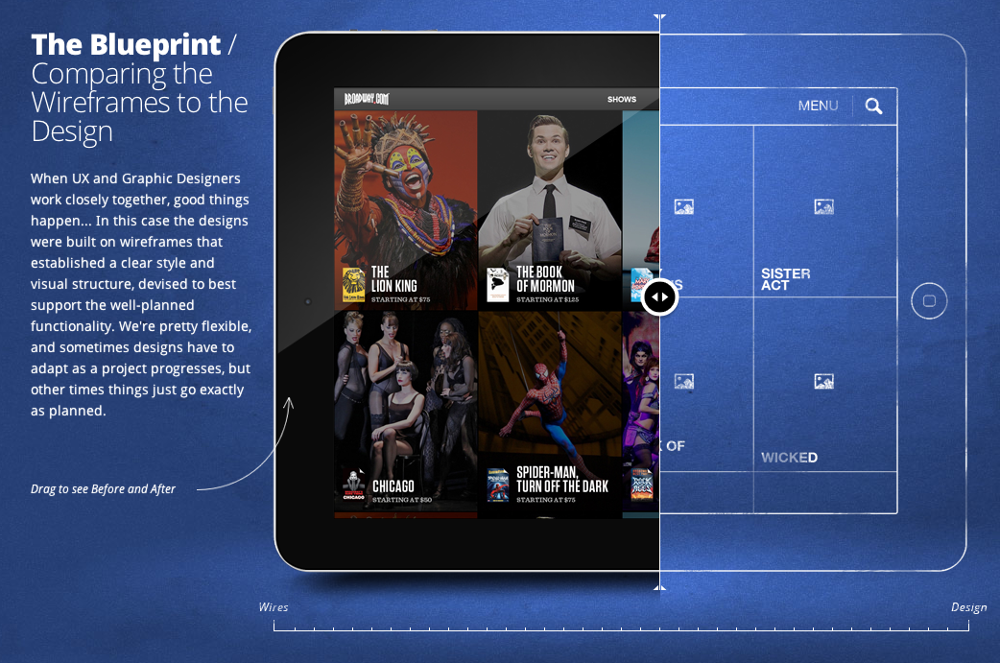

No Handed Bike Moves
A professional display of 50 No Handed Bike Moves performed to “Golden Tree" by Martin Brooks. Who knew the Official Federation of No Handed Bikes Skills had sanctioned over 50 moves?
A professional display of 50 No Handed Bike Moves performed to “Golden Tree" by Martin Brooks. Who knew the Official Federation of No Handed Bikes Skills had sanctioned over 50 moves?
"Photography, as a powerful medium of expression and communications, offers an infinite variety of perception, interpretation and execution". —Ansel Adams
I love the way that photographer Josh Adamski digitally manipulates his shots to give them a highly surreal landscape combined with simple silhouettes. See all of his work at 500px.


“Combining two images that were on the Tumblr Radar within the same day.” — topherchris
Inspired by Tumblr’s own topherchris we quickly threw together radarchop.tumblr.com, and we are open for submissions! Just grab two images from today’s Tumblr radar, hack them together and submit the results along with links to the posts featured in the radar.
Ry Craike captured at home over Summer by Rick Rifici on his latest High Speed Camera the RED EPIC from the water at 300 frames per second.
I’m convinced that you could film just about anything in the ocean at 300 frames per second and it would look pretty amazing. The track in the video is The Suburbs by Mr Little Jeans.




Fi’s case studies are clearly in a league of their own to show off their client work. As a potential client you gain insight to their entire process and strategy, but as a designer the case studies are valuable tools in learning how to communicate design strategy with a client.
If you are a designer or a small design studio, this is the level of detail that you need to pour into every project to move beyond your tired hourly-based billing into the promise land of value based pricing. Charging by the hour is for chumps.
See the whole Broadway.com iPad App case study as well as Redbull TV, HTC Global, and History Channel’s Civil War 150.
In 2112, creativity will be the most valued form of work because creativity is about going against what everyone (including yourself) believes in. By 2112, our minds will be directly connected to computers. […] The ways of thinking and working that artists and designers embody so naturally will be in higher demand. These skills will be universally recognized as how we advance society’s future, rather than a nice “add-on” as they are perceived of today. Creativity will be the new currency of work, the world over.
John Maeda, on the future and creativity
Oh that’s really cool! I’ve never heard of ppl using fb to do customer support!! Most just try to shove items in our face and expect us to buy things off fb!! Lol
- Cher C., in reply to Style Hatch’s support on Facebook that we just rolled out
If you or the brand you work with has “Facebook eCommerce page" anywhere our your social media strategy, you should fire your team. Ok, that might be a bit harsh, but the truth is people interact with brands on Facebook to have a personal connection not have them “shove items in our face".
Facebook and social media belong in the customer experience world, not “oh look we can sell our stuff there too".
Nearly all successful teams understand and value a design exploration approach to solving problems, but how do you productively critic designs when so many options are being explored regardless of job titles or seniority?
Design decisions should always be based on what’s appropriate for the task at hand. If you find your design is being beaten down, the best way to fight back is to counter with “Well, when would my design be appropriate?”. Conversely, before you take pleasure in destroying someone else’s hard work, first make sure that you can answer “When is this solution great?”. […]
Lastly, always remember the golden rule of critique: don’t be a dick.
Read the full post from Intercom and check out their slick new “customer relationship management and messaging tool for web app owners”.

Just a few hours ago we debuted our fresh, new branding for Style Hatch along with a taste of our full site launching in April. After over a decade of creating sites, campaigns and brand strategies for large brands from Activision to Microsoft, we have shifted out entire studio to create fresh designs for individuals with the goal of helping you show off your inner genius.
We can’t wait to show off everything we have lined up! Now for a few fun facts, since our first theme Backburner we have launched 15 themes, pushed live 109 updates to the themes, and answered 27,697 support emails as of yesterday morning.
A part of the refresh we even had fancy new letterpress cards created just in time for SXSW. Check out a shot of the cards on Dribbble.
Inspired by Marble Madness, Captain Skyhawk and the like, Daniel Savage crafted this retro isometric animation bit by bit over the course of three years. All of the illustrations and animations were created with Illustrator and After Effects.
Heading to SXSW Interactive this year? Danielle Morrill put together a great article on how to get the most out of SXSW including prepping your calendar (don’t do it) and prepare like a soccer mom on crack.
This year our entire Style Hatch team—all three of us @Moore, @iJess and @krisnicolemoore—are packing and heading to Austin for the week. We’re putting together the details for a mini-event since we would love to meet you in person and buy you a drink.
Email us at sxsw@stylehatch.co or send us a tweet @stylehatch with #sxsw, and we will hook you up next week.